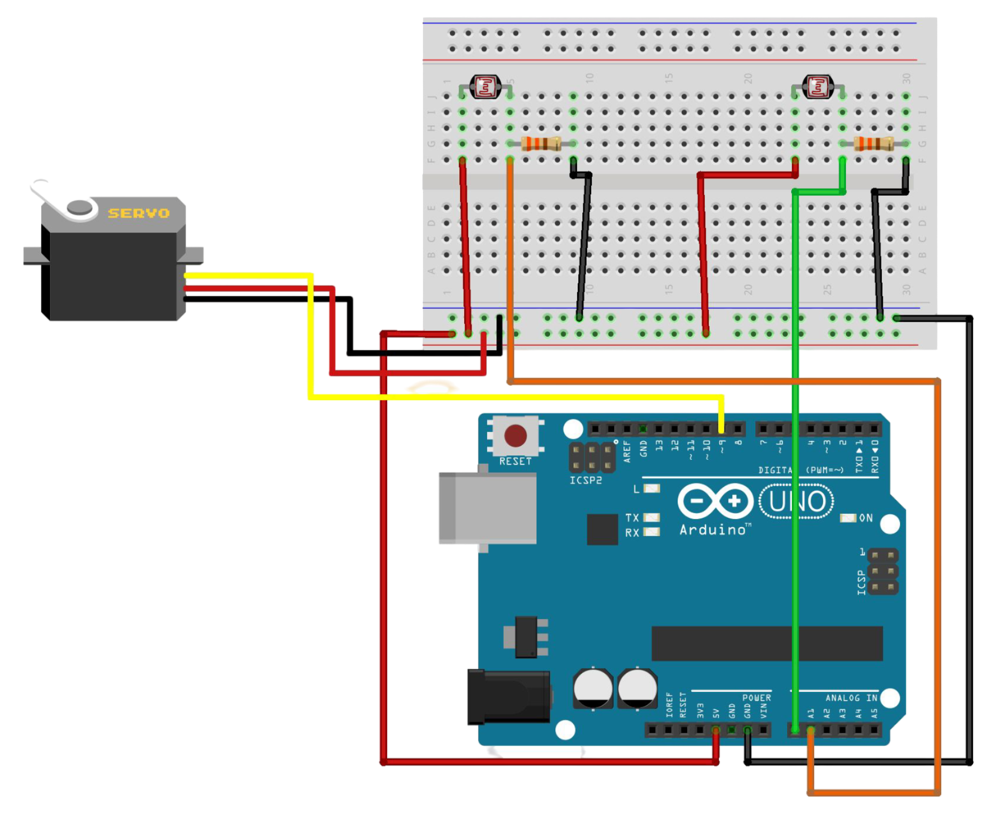

Descrição do Projeto
Motivação, Objetivo e Contextualização
- Motivação: Projeto Arduino Girassol Seguidor de Luz é um protótipo eletrônico interessante que permite desenvolver o pensamento técnico e estudar a eletrônica de forma a aliar teoria e prática de uma maneira divertida.
- Objetivo: Desenvolver um projeto em arduino em que a "flor" seja capaz de verificar a luz do ambiente e direcionar-se para o lado de maior luminosidade, fazendo um trabalho igual ao de um girassol.
- Contextualização: Um seguidor de luz é um dispositivo eletrônico projetado para detectar a intensidade da luz em diferentes direções e mover-se em direção à fonte luminosa. O projeto de seguidor de luz utilizando Arduino é uma aplicação prática para demonstrar os conceitos de sensores, automação e controle de movimento. Além disso, oferece uma maneira acessível de entender o funcionamento de sistemas de sensores e motores, além de possibilitar a exploração da robótica básica.
Esquema Conceitual
Código
Clique e acesse o código do arduino no repositório do GitHub!Clique e acesse o código do site no repositório do GitHub!
Download do Projeto
para baixar o projeto!Vídeo do Projeto
Palavras-chave
- Arduino
- Sensor de luz
- Girassol
- Robô fotossensível